BoneJ
| | |
|---|---|
| Author | Michael Doube, Richard Domander, Alessandro Felder |
| Maintainer | Michael Doube, Alessandro Felder |
| Source | on GitHub, doi:10.5281/zenodo.1427262 |
| Initial release | Dec 11th, 2017 |
| Latest version | styloid-r7 |
| Development status | Active |
BoneJ is a collection of skeletal biology plug-ins for ImageJ.
This is the new, modernized version of the software available through the ImageJ updater. Its update site is called BoneJ. For the old ImageJ1 version, see BoneJ1.
This version works with the latest Fiji, and complies with the modern ImageJ architecture. Most plug-ins also now support hyperstacks, i.e. images with multiple channels or time frames.
Below is the documentation for the plug-ins included in BoneJ.
Contents
- 1 Installation
- 2 Analyse skeleton
- 3 Anisotropy
- 4 Area/Volume fraction
- 5 Calibrate SCANCO (WIP)
- 6 Check voxel depth (WIP)
- 7 Connectivity
- 8 Delete slice range (WIP)
- 9 Ellipsoid factor
- 10 Fit ellipsoid
- 11 Fit sphere (WIP)
- 12 Fractal dimension
- 13 Inter-trabecular angles
- 14 Thickness
- 15 Moments of inertia
- 16 Orientation
- 17 Particle Analyser
- 18 Purify
- 19 Skeletonise
- 20 Slice geometry
- 21 Surface area
- 22 Surface fraction
- 23 Results table
- 24 Usage reporting
- 25 Where is my favourite plug-in?
- 26 Licence
- 27 Citation
- 28 Funding
Installation

- Download the latest version of Fiji for your operating system
- Launch Fiji
- Select in the menu Help > Update...
- Click Manage update sites
- Check BoneJ
- Click Close
- Click Apply changes
After the downloads have finished, close and restart Fiji.
Analyse skeleton
Menu path Plugins > BoneJ > Analyse skeleton.
This plug-in simply includes AnalyzeSkeleton in BoneJ. It adds some additional validation to check that your image suits the tool. It also skeletonizes your image by calling Skeletonize3D if needed.
Suitable images
The input image must be 2D or 3D, 8-bit and binary. Hyperstacks are not supported.
Differences to BoneJ1
Calls the latest version of AnalyzeSkeleton.
Anisotropy
Menu path Plugins > BoneJ > Anisotropy.
Anisotropy is used to quantify the directionality of trabecular bone. It tells whether the trabeculae have a certain orientation, or if they're randomly aligned. The method to measure anisotropy is fairly complex and consists of multiple steps:
- Find mean intercept length (MIL) vectors from
 directions
directions - Plot MIL vectors into a point cloud
- Solve the equation of an ellipsoid that best fits the point cloud
- Calculate the degree of anisotropy from the radii of the ellipsoid
It's important to note that algorithm is stochastic and does not guarantee exact results. Thus it's recommended to run it several times to establish the degree of anisotropy in your image.

In the first step the algorithm draws parallel lines over the input image in direction 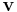. The direction is chosen randomly. Each line segment in the image stack is sampled to find points where it changes from background to foreground, i.e. where the line enters an object. The points are called phase changes, in the adjacent figure they're marked with red dots. After the sampling is complete, the algorithm forms a MIL vector, whose length is the total length of the line segments divided by the total number of phase changes found. The MIL vector has the same direction as . Drawing and sampling the lines is repeated for directions, and the method creates MIL vectors.
After the MIL vectors have been calculated, they are added to a point cloud (a collection of points) around the origin. Then the method tries solve the equation of an ellipsoid that would fit the cloud. There may be no solution, especially if there are few points. That is, the fitting may fail at which point the plug-in stops. The radii of this ellipsoid determine the degree of anisotropy (see results).

In more detail, the lines in the first step are projected from a  plane with normal (see the adjacent figure). The size
plane with normal (see the adjacent figure). The size  , where
, where  are the dimensions of the image stack. Each of the lines goes through a random point
are the dimensions of the image stack. Each of the lines goes through a random point  on the plane. The points are random, but evenly distributed across the plane. The lines are drawn until they intercept the stack edges at points 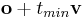,
on the plane. The points are random, but evenly distributed across the plane. The lines are drawn until they intercept the stack edges at points 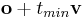, (the algorithm solves for
(the algorithm solves for  ,
,  ). These line segments within the stack are then sampled for phase changes. In this drawing method some lines may miss the image stack completely, but conversely there aren't any areas in the stack that don't have a chance of being sampled.
). These line segments within the stack are then sampled for phase changes. In this drawing method some lines may miss the image stack completely, but conversely there aren't any areas in the stack that don't have a chance of being sampled.
Suitable images
A 3D binary image.
The plug-in is intended to analyse the "texture" of an object thus it suits samples of a larger whole, e.g. a trabecular cube that fills the whole stack. The results for whole objects such as the pre-packaged Bat Cochlea Volume ImageJ sample image are not really meaningful.
Parameters
- Directions: number of times sampling is performed from different directions. The minimum is
 , because that's how many independent variables the algorithm needs to solve the "shape" of the orientation in the image.
, because that's how many independent variables the algorithm needs to solve the "shape" of the orientation in the image. - Lines per direction: controls how many parallel lines are drawn per each direction. Each line has the length
 .
. - Sampling increment: controls the distance between sampling points along a line. The default and minimum is <math\sqrt{3}</math>. The number of samples taken per line depends on the length of the line segment within the image stack.
- Recommended minimum: if checked, then the above three parameters are set to the recommended minimum values. In our tests we found that with these values the results are quite stable, and fitting unlikely to fail. However, these minimums are not guaranteed to be the best settings for your image.
- Show radii: if checked, then the radii of the fitted ellipsoid are shown in the results table.
- Show Eigens if checked, then the eigenvectors and values of the fitted ellipsoid are shown in the results table.
- Display MIL vectors if checked, shows the MIL vectors plotted in a point cloud on 3D Viewer
Convergence Analysis
It is helpful to run a convergence analysis to determine settings that lead to a stable result in a reasonable amount of time. We recommend running the following macro on a typical image from your experiments.
//number of directions to draw probes
nDirsMax = 32768; //<- edit to suit your needs
//number of lines per direction
nLinesMax = 1024; //<- edit to suit your needs
// --- No need to edit the rest
row = 0;
setBatchMode(true);
for (nDirs = 16; nDirs <= nDirsMax; nDirs *= 2){
for (nLines = 1; nLines <= nLinesMax; nLines *= 2){
startTime = getTime();
run("Anisotropy", "inputimage=net.imagej.ImgPlus@73956688 directions="+nDirs+" lines="+nLines+" samplingincrement=1.73 recommendedmin=true printradii=true printeigens=true displaymilvectors=false instruction=\"\"");
endTime = getTime();
duration = endTime - startTime;
setResult("nDirs", row, nDirs);
setResult("nLines", row, nLines);
setResult("Duration", row, duration);
updateResults();
row++;
}
}
This macro will output two tables, one with anisotropy results and one logging directions, lines, and duration. To complete the convergence analysis the two tables have to be copy-pasted into a spreadsheet so that anisotropy results can be plotted alongside timings and input parameters.
Results
- Degree of anisotropy: how much orientation there is in the structure.
 means the image is completely isotropic, the sample has no directionality whatsoever. 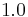 means there is an extreme prevailing orientation in the structure of the image.
means the image is completely isotropic, the sample has no directionality whatsoever. 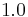 means there is an extreme prevailing orientation in the structure of the image. - Radii of fitted ellipsoid (optional): the lengths of the radii
 of the ellipsoid fitted on the MIL points. Degree of anisotropy equals 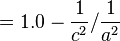.
of the ellipsoid fitted on the MIL points. Degree of anisotropy equals 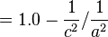. - Eigenvectors and values (optional): the values
 correspond to the
correspond to the  components of the three eigenvectors of the fitted ellipsoid. The eigenvalues
components of the three eigenvectors of the fitted ellipsoid. The eigenvalues  correspond to 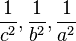 respectively, where
correspond to 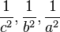 respectively, where  are the radii of the ellipsoid.
are the radii of the ellipsoid.
The measures are reported separately for each 3D subspace in the image, i.e. for each channel and time frame.
Differences to BoneJ1
- This Anisotropy is not repeated until results stabilise like in BoneJ1.
- MIL vectors are drawn differently. In BoneJ1 they're drawn in sphere-shapes around random seed points. Here parallel lines from different directions are drawn through the whole stack. We think this method produces more uniform sampling, i.e. there's less chance of a directional bias.
Related publications
- Odgaard A (1997), Three-dimensional methods for quantification of cancellous bone architecture, Bone, 20, 315-328, doi:10.1016/S8756-3282(97)00007-0
- Harrigan TP, Mann RW (1984), Characterization of microstructural anisotropy in orthotropic materials using a second rank tensor, J Mater Sci, 19, 761-767, doi:10.1007/BF00540446
Area/Volume fraction
Menu path Plugins > BoneJ > Fraction > Area/Volume fraction
Area/Volume fraction calculates the fraction of bone in an image by it to the whole image. It counts all the foreground voxels, which it assumes represent bone, and compares them to the total number of voxels in the image. More formally defined, the plug-in calculates the fraction BV/TV, which is the volume of mineralised bone BV per unit volume of the sample TV. In case of a 2D image, it calculates the fraction BA/TA, which is the area of bone per unit area of the sample.
Suitable images
A 2D or 3D binary image
Results
- Bone volume: volume of the bone voxels.
- Total volume: volume of the whole image.
- Volume ratio: ratio of bone to total volume.
The measures are reported separately for each 2D/3D subspace in the image, i.e. for each channel and time frame. Results will be for area if image is 2D.
Differences to BoneJ1
- In BoneJ1 the plug-in was called Volume fraction
- Can process 2D images
- Supports hyperstacks
Calibrate SCANCO (WIP)
Menu path Plugins > BoneJ > Analyze > Calibrate SCANCO
Applies the mg HA/ccm pixel value calibration, i.e. HU or Hounfield unit calibration stored in the .isq format metadata to the image.
Suitable images
An .isq format image generated by Scanco X-ray microtomography scanners.
Check voxel depth (WIP)
Menu path Plugins > BoneJ > Stacks > Check Voxel Depth
Checks whether slice spacing has been calibrated correctly. Some DICOM images contain slice thickness data in the header information, but thickness is not necessarily the same as the physical distance between consecutive slices' positions.
Suitable images
A 3D image.
Connectivity
Menu path Plugins > BoneJ > Connectivity.
The Connectivity plug-in is designed to estimate the number of connected structures i.e. trabeculae in a trabecular network. This connectivity measure is related to a topological number  known as Euler characteristic, Euler number or Euler-Poincaré characteristic. Mathematically defined connectivity is
known as Euler characteristic, Euler number or Euler-Poincaré characteristic. Mathematically defined connectivity is  . Roughly speaking, describes the shape or structure of a topological space. It can also be expressed as 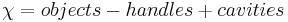, where a handle is a hole that goes through an object (e.g the hole in a doughnut, or the ear of a coffee mug), and a cavity is enclosed inside one. When measuring trabecular cubes, you need to add
. Roughly speaking, describes the shape or structure of a topological space. It can also be expressed as 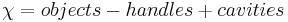, where a handle is a hole that goes through an object (e.g the hole in a doughnut, or the ear of a coffee mug), and a cavity is enclosed inside one. When measuring trabecular cubes, you need to add  to to get a more accurate estimate of the connectivity of the whole network. The term corrects for the change in the topology of an object, when it's cut to pieces.
to to get a more accurate estimate of the connectivity of the whole network. The term corrects for the change in the topology of an object, when it's cut to pieces.
NB some other Euler characteristic implementations report 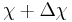 as , i.e. in them the correction is implicit.
Suitable images
The input image must be 3D and binary. The plug-in assumes that there is only one particle in the foreground; to achieve this, run Purify. Having more than one object often leads to negative connectivity.
Results
- Euler characteristic (χ): describes the shape of the object(s) in the image, .
- Corrected Euler (χ + Δχ): the Euler characteristic of the part corrected for edge effects to fit the whole.
- Connectivity: gives an estimate of the number of connected trabeculae in the image. Equal to
 .
. - Conn. density: connectivity divided by unit volume.
The measures are reported separately for each 3D subspace in the image, i.e. for each channel and time frame.
Differences to BoneJ1
- Supports hyperstacks
- The old version reported Corrected Euler (χ + Δχ) incorrectly as Δχ
Related publications
- Odgaard A, Gundersen HJG (1993), Quantification of connectivity in cancellous bone, with special emphasis on 3-D reconstructions, Bone 14: 173-182, doi:10.1016/8756-3282(93)90245-6.
- Toriwaki J, Yonekura T (2002), Euler number and connectivity indexes of a three dimensional digital picture, Forma 17: 183-209
Delete slice range (WIP)
Menu path Plugins > BoneJ > Stacks > Delete slice range
Removes a range of slices from a stack, so that cropping in the Z direction is practical.
Suitable images
A 3D image.
Ellipsoid factor
Menu path Plugins > BoneJ > Ellipsoid factor.
Ellipsoid Factor is a new method for measuring rod/plate geometry. It uses the axis lengths from prolate, oblate and intermediate elipsoids to determine how prolate or oblate the trabecular space is at a particular point. Highly prolate (javelin-shaped, rod-like) ellipsoids have a single long axis () and two short axes (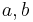) such that  , whereas highly oblate (discus-shaped, plate-like) ellipsoids have two longer axes (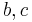) and one much shorter axis () so that
, whereas highly oblate (discus-shaped, plate-like) ellipsoids have two longer axes (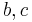) and one much shorter axis () so that  . Calculating 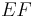 as the difference in ratios,
. Calculating 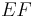 as the difference in ratios,  leads to a useful scale ranging from 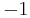 (oblate,
leads to a useful scale ranging from 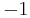 (oblate,  ) to
) to  (prolate, 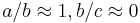). of
(prolate, 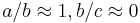). of  indicates an intermediate ellipsoid where
indicates an intermediate ellipsoid where  , which is the case for spheres (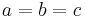) and other ellipsoids with axis ratios 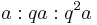. Ellipsoid Factor runs Skeletonize3D to get the medial axis of the trabeculae, which is used as the seed for sampling. Ellipsoids are seeded from each voxel on the medial axis. A combination of dilation, contraction, rotation and a small amount of translation is run iteratively until the ellipsoid increases no further in volume.
, which is the case for spheres (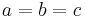) and other ellipsoids with axis ratios 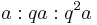. Ellipsoid Factor runs Skeletonize3D to get the medial axis of the trabeculae, which is used as the seed for sampling. Ellipsoids are seeded from each voxel on the medial axis. A combination of dilation, contraction, rotation and a small amount of translation is run iteratively until the ellipsoid increases no further in volume.
The EF at a point in the structure is determined as the EF of the most voluminous ellipsoid which contains that point.
If you use Ellipsoid Factor in your work, please cite: Doube M (2015), The Ellipsoid Factor for quantification of rods, plates and intermediate forms in 3D geometries, Frontiers in Endocrinology, 6:15, doi: 10.3389/fendo.2015.00015
Suitable images
A binary 3D image.
Parameters
- Sampling increment: distance between sample points on each vector; should be less than the pixel spacing.
- Vectors: number of vectors to sample at each seed point.
- Skeleton points per ellipsoid: allows dense or sparse sampling, a value of 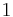 means that an ellipsoid is sampled at every seed point.
- Contact sensitivity: how many vectors must touch the background before dilation stops.
- Maximum iterations: how hard to try to find larger ellipsoids - fitting will stop if no improvement has been made after this number of iterations..
- Maximum drift: how far the centroid may be displaced from its seed point.
- EF image: stack containing EF values for each point contained by at least one ellipsoid and NaN elsewhere.
- Ellipsoid ID image: stack containing the ID of the biggest ellipsoid at each point, ranked in descending order ( is the largest ellipsoid).
- Volume image: image showing the volume of the largest ellipsoid containing that point.
- Axis ratio images: images showing
 and
and  ratios foreach point containing at least one ellipsoid and NaN elsewhere.
ratios foreach point containing at least one ellipsoid and NaN elsewhere. - Flinn peak plot: plot of vs weighted by volume, so bright pixels indicate relatively more of the structure has that axis ratio.
- Gaussian sigma: amount to blur the Flinn peak plot - set to for a precise but less 'beautiful' result.
- Flinn plot: unweighted Flinn plot - every ellipsoid is represented by the same sized point regardless of ellipsoid size.
Results
- EF image: stack containing EF values. NaN (not a number) values are used in the background. Summary statistics can be obtained by running Analyze > Histogram
- Short-Mid image: stack containing the ratios
- Mid-Long image: stack contining the ratios
- Volume image: stack containing ellipsoid volumes
- Max id image: stack containing the ID of the largest ellipsoid at each point; IDs relate to the sort order based on volume, so ID = 0 is the largest ellipsoid. is foreground and background is labelled with a large negative number.
- Flinn diagram: plot of versus values present in the volume
- Weighted Flinn plot: Flinn diagram with peaks of intensity proportional to volume occupied by each (, ) ratio
Related publications
Salmon PL, Ohlsson C, Shefelbine SJ, Doube M (2015), Structure model index does not measure rods and plates in trabecular bone, Frontiers in Endocrinology, 6:162, doi:10.3389/fendo.2015.00162.
Fit ellipsoid
Menu path Plugins > BoneJ > Fit ellipsoid.
Finds the ellipsoid that best fits a set of point or multi-point ROIs in the ROI Manager. Fit ellipsoid may fail to fit an ellipsoid. The more points you add, the more likely it is to succeed. Points are scaled to the spatial calibration (voxel widht, height & depth) of the input image.
Suitable images
A 3D image.
Parameters
- ROI Manager: ROIs with at least nine points in the ROI Manager.
Results
- Radii: the radii a, b and c of the fitted ellipsoid. Radius a is the shortest and c the longest.
- Centroid: x, y and z coordinates of the ellipsoid centre point.
Differences from BoneJ1
- Supports multi-point ROIs.
- Plug-in cancels if an ellipsoid can't be found, instead of reporting invalid results.
Fit sphere (WIP)
Menu path Plugins > BoneJ > Fit sphere.
Finds the sphere that best fits a set of point ROIs, and optionally displays the image data bounded by the sphere in a new image window. Place a set of point ROIs on structures of interest, hitting [T] to add each point to the ROI Manager. Fit Sphere takes the coordinates of the points from the ROI Manager and applies a least-squares optimisation.
Suitable images
A 3D image.
Parameters
- ROI Manager: populated with at least 5 point ROI's
- Copy Sphere: Create a new stack containing image data from within the best-fit sphere.
- Padding: Number of black pixels to put between the sphere and the sides of the image
- Inner Cube: Create a new stack containing image data from the cube that just fits inside the best-fit sphere.
- Outer Cube: Create a new stack containing image data from the cube that the best-fit sphere just fits inside.
- Crop Factor: Radius used for generating new images is multiplied by crop factor so that a bigger or smaller volume can be produced.
- Add to ROI Manager: Add the sphere to the ROI Manager as a set of circular ROIs
- Clear ROI Manager: Clear any existing ROIs in the Manager prior to adding circles
Results
- X Centroid: x-coordinate of sphere's centroid
- Y Centroid: y-coordinate of sphere's centroid
- Z Centroid: z-coordinate of sphere's centroid
- Radius: length of radius
- Images (optional): images containing a copy of the original data within the sphere, or within cubes bounding or bounded by the sphere.
Fractal dimension
Menu path Plugins > BoneJ > Fractal dimension.
This plug-in estimates the fractal dimension of an image by applying the box-counting algorithm. In this algorithm grids of diminishing size are scanned over the image, and the number of boxes containing at least one foreground voxel is counted. As the box size decreases and the grid becomes finer, the proportion of foreground boxes increases in a fractal structure. See Wikipedia for further details. BoneJ uses a fixed-grid scan, with an option to try to find the optimal covering.
The box counting algorithm produces a pair of 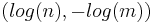 values for each iteration it runs. Here n = number of boxes with foreground, and m = box size. These pairs are passed to a curve-fitting algorithm, which returns the slope of the linear function which describes them (regression fit). The coefficient of this slope is the fractal dimension.
Fractal dimension is markedly influenced by the parameters selected for the box counting algorithm, so it's worth running it several times with different values to find an accurate measure for your image.
Suitable images
A 2D or 3D binary image.
Parameters
- Starting box size (px): the size (sides) in pixels of a box in the sampling grid in the first iteration of the algorithm.
- Smallest box size (px): the minimum size in pixels of a box in the grid. When box size becomes smaller than this limit, the algorithm iterates one more time, and then stops.
- Box scaling factor: the term used to divide the box size after iteration. For example, a scaling factor of
 halves the size at each step.
halves the size at each step. - Grid translations: how many times at each iteration the grid is moved to try to the find the optimal covering. The optimal covering covers the objects in the image with the least amount of boxes. The larger the parameter the more likely it is that optimal covering is found. However, this slows down the plug-in considerably.
- Automatic parameters: if checked, then the plug-in runs with default parameters.
- Show points: if checked, then the plug-in displays the values it calculated.
Results
- Fractal dimension: the fractal dimension of the image. For example, the Koch snow flake has a fractal dimension of 1.262.
- R²: the coefficient of determination of the line fitted to the points.
The measures are reported separately for each 3D subspace in the image, i.e. for each channel and time frame.
Differences to BoneJ1
- Supports hyperstacks
- Algorithm parameters can be changed by the user.
Related publications
Fazzalari NL, Parkinson IH (1996), Fractal dimension and architecture of trabecular bone, J Pathol, 178: 100-5, doi:10.1002/(SICI)1096-9896(199601)178:1<100::AID-PATH429>3.0.CO;2-K.
Inter-trabecular angles
Menu path Plugins > BoneJ > Inter-trabecular Angles.
The plug-in was designed to analyse the angles between trabeculae of cancellous bone. First it calls Skeletonize3D to thin the input image (if necessary). Then it calls AnalyzeSkeleton, which creates a graph of the largest skeleton (by number of nodes) in the thinned image. The graph consists of nodes and the edges that connect them. Nodes are also known as vertices, and edges as branches. Roughly speaking the edges correspond to trabeculae and the nodes to the junction points, where trabeuculae meet.
The graph is often not a perfect representation of the trabecular network in the input image. Inter-trabecular angles offers many options to adjust the graph's topology and filter out artefacts that may obfuscate or skew the results. First it allows you to filter out nodes with too many or too few edges. Secondly it can be used to prune very short edges, which often do not represent actual trabeculae.

Pruning works differently for different types of edges. There are four kinds: outer, dead-end, inner and short. An outer edge doesn't interconnect different parts of a graph. In other words, one (and only one) of its endpoints connects to only one branch, i.e. the edge itself. In the figure the outer edge is colored black. A dead-end (blue) is an outer edge whose length is less than the minimum set by the user, i.e. it's a short, outer edge. An inner edge (green) connects to end points with more than one branch. A short edge is an inner edge, whose length is less than the set minimum. When a dead-end is pruned, it with its "lonely" end-point are removed from the graph. When a short edge is pruned, it and it's endpoints are removed, and a new node is placed at the midpoint of the former. This new node connects to all the branches the previous nodes connected to.
Inter-trabecular angles offers two further options to control pruning: iteration and clustering. Iteration repeats pruning until no new short edges are found. Sometimes pruning can create new short edges, and thus the graph may still have them after one iteration. However, iteration can alter the structure of the graph too dramatically. Clustering searches for all nodes connected by short edges, before removing any. In the figure, clustering pruning would remove the four nodes and the red edges between them in one go. It would create a new node at the center of the previous four, and connect it to the blue and green edges. When pruning is not clustering, it removes edges one-by-one. This changes the end result depending on the order the edges are traversed. Clustering creates the same result each time.
Pruning also removes loops and redundant parallel edges. The former connects to the same node on both ends, and the latter connects two nodes that are already connected by another edge.
The pruning and filtering features were added so that we can replicate and continue from the research of Reznikov et al.
Suitable images
An 8-bit, binary 2D or 3D image. Hyperstacks are not supported.
Parameters
- Minimum valence: minimum number of branches for a node to be included in the analysis.
- Maximum valence: maximum number of branches for a node to be included in the analysis.
- Minimum trabecular length (px): minimum length for a branch to be preserved in the pruning. Length is calculated as the distance between the endpoints of a branch.
- This length is also displayed in the units of the image calibration
- Margin (px): minimum distance of a node from image stack edges to be included in the analysis. Having nodes too close to the edges can make the results less accurate, because you get more branches that do not terminate to a node at the other end.
- Iterate pruning: repeat pruning until no more new short branches are discovered. When true, the topology of the graph is likely to change more in the pruning.
- Use clusters: if true then the pruning result is independent of the order in which the graph is traversed. False corresponds with methodology in Reznikov's article. See above for more details.
- Print centroids: Print the centroids (center coordinates) of the node pairs at the ends of each edge.
- Print % culled edges: Print statistics of different types of edges pruned.
Results
- Inter-trabecular angles: angles (in radians) between each branch of each node included in the analysis. Sorted into columns according to the number of branches per node. For example, column "3" shows the angles between branches of nodes with three branches.
- Centroids (optional): A table of the center coordinates of the node pairs at the ends of each edge.
- Culled edge percentages (optional): A table showing the percentages of different kinds of edges pruned, compared to the total number of edges in the analysed graph.
- Skeleton (optional): if the plug-in had to skeletonise the input image, it displays the result of the thinning.
Differences to BoneJ1
- Inter-trabecular angles generalizes the idea of Triple point angles for any types of points. It also provides more tools for adjusting the graph for analysis.
Related publications
Reznikov, N et al. (2016), Inter-trabecular angle: A parameter of trabecular bone architecture in the human proximal femur that reveals underlying topological motifs, Acta Biomaterialia, 44: 65--72, doi:j.actbio.2016.08.040.
Thickness
Menu path Plugins > BoneJ > Thickness.
This plug-in includes Local_Thickness in BoneJ, and provides some additional options & results. Local thickness measures the diameter of the largest sphere that fits inside the object and contains the point for each point i.e. foreground voxel in an image. The plug-in calculates mean and standard deviation of the trabecular thickness (Tb.Th) or trabecular spacing (Tb.Sp) directly from pixel values in the resulting thickness map. Foreground voxels are considered trabeculae, and background voxels are the spacing. Processing time is heavily dependent on feature size (in pixels); large features can take a very long time to process.
Suitable images
The input image must be 3D, 8-bit and binary. Hyperstacks are not supported.
Parameters
- Calculate: chooses which thickness maps to calculate - trabecular thickness, trabecular spacing, or both. In order to calculate trabecular spacing, the image voxels are inverted.
- Show thickness maps: display the calculated thickness maps or not.
- Mask thickness maps: remove artifacts from the thickness maps. Artifacts are foreground voxels not present in the original image. Resets to true for each run, because unmasked pixels bias the result.
Results
- The mean and standard deviation for each thickness map calculated.
- Displays thickness map images if Show thickness maps was selected.
Differences to BoneJ1
- Calls the latest version of Local_Thickness.
Related publications
- Dougherty R, Kunzelmann K (2007), Computing local thickness of 3D structures with ImageJ, Microsc. Microanal., 13: 1678-1679, doi:10.1017/S1431927607074430
- Hildebrand T, Rüegsegger P (1997), A new method for the model-independent assessment of thickness in three-dimensional images, J. Microsc., 185: 67-75, doi:10.1046/j.1365-2818.1997.1340694.x
Moments of inertia
Menu path: Plugins > BoneJ > Moments of Inertia
Calculates the three orthogonal principal axes and moments of inertia around those axes. It includes pixels with values between upper and lower limits, which can be defined in terms of unitless grey values or Hounsfield units (HU). It optionally creates a new stack with the image centred and rotated so that the principal axes are parallel to the image stack's x, y and z axes. Calculations are limited to a rectangular ROI if one is drawn. The plugin will guess whether the image is HU calibrated, and if so, apply HU limits of bone (0-4000 HU), otherwise it will calculate auto-thresholds based on the stack's histogram. If a calibration curve is known, the coefficients can be added to get weighted calculations. Aligning a bone with Moments of Inertia may be a useful step prior to Slice Geometry if bones are not aligned with the image z axis.
Suitable images
An 8-bit or 16-bit image.
Parameters
- Start slice: First slice to include in calculations
- End slice: Last slice to include in calculations
- HU Calibrated: Plugin will guess whether the image is HU calibrated. If image is HU calibrated, make sure the box is checked and enter HU calibrated numeric values in the following fields
- Bone Min: Lower threshold, in either uncalibrated greys or HU
- Bone Max: Upper threshold, in either uncalibrated greys or HU
- Slope: m where physical density = m × pixel value + c
- Y Intercept: c where physical density = m × pixel value + c
- Align result: Draw a new stack with the principal axes parallel to the image axes
- Show axes (2D): Draw the axes in white on the aligned image
- Show axes (3D): Display the stack and its principal axes in a 3D Viewer window
- Record unit vectors: Record the elements from the eigenvector matrix in the Result table; this is the orientation of the object's principal axes.
Results
- Image (optional): a copy of the input image centered and aligned with the principal axes
- Xc: Centroid x-coordinate (mass-weighted by calibrated density)
- Yc: Centroid y-coordinate
- Zc: Centroid z-coordinate
- Vol: Total volume of thresholded voxels
- Mass: Mass of bone, from pixel values and density calibration coefficients
- Icxx: Moment around x axis passing through centroid
- Icyy: Moment around y axis passing through centroid
- Iczz: Moment around z axis passing through centroid
- Icxy: Off-axis term for constructing inertia tensor
- Icxz: Off-axis term for constructing inertia tensor
- Icyz: Off-axis term for constructing inertia tensor
- I1: Moment around the shortest principal axis
- I2: Moment around the middle principal axis
- I3: Moment around the longest principal axis
- Optional verbose eigenvector elements: the 3 unit vectors' elements sorted column first (i.e. vector0{x, y, z}, vector1{x, y, z}, vector2{x, y, z}) sorted in the reverse order of the eigenvalues I1, I2 and I3.
- Verbose output in Log window
- Eigenvalues: Result of of eigenvalue decomposition. Moments of inertia
- Eigenvectors of principal axes: orientation of input image
- Inverse eigenvector matrix: used to map voxel positions in the aligned image back to voxel positions in the original image
- Optional 3D display of principal axes
Orientation
Menu path: Plugins > BoneJ > Orientation
Sets the direction in a 2D image, without rotating the image or changing it in any way. Slice Geometry optionally uses Orientation to calculate diameter, second moments of area and section moduli around anatomic axes set by the user. To apply the selected orientation to a Slice Geometry analysis, run Orientation, select axes and direction, leave the Orientation window open, run Slice Geometry, and select Use Orientation.
The option to use Orientation will be greyed out in Slice Geometry if there is no active Orientation window. Also, in the Results table you will see a list of results that relate to the particular axis pair you have chosen. Orientation can handle multiple open images and will handle different images’ orientation independently.
Suitable images
A 2D image.
Parameters
- Orientation: input field displays current orientation (clockwise from 12 o'clock) and takes keyboard input
- deg / rad: display and set orientation in degrees or radians
- Principal direction: the main direction, the head of which is displayed in red
- Secondary direction: the orthogonal direction
- Reflect: swap the labels on this axis
Results
- Orientation axes: draws the axes of the orientation on the image.
Particle Analyser
Menu path: Plugins > BoneJ > Analyze > Particle Analyser
Particle Analyser performs connected-components labelling. It started life as an adaptation of the 3D Object Counter, for identifying particles as part of Purify. Once it became obvious that the heavily recursive algorithm was very inefficient, especially on large stacks, particle labelling was rewritten to be multithreaded and much less recursive.
A member of our group wished to study osteocyte lacunae in synchrotron microCT images, so the Particle Analyser was born from Purify's particle labelling algorithm. Other groups use Particle Analyser for soil analysis; it could be used for any porous media. Particle Analyser labels unique (unconnected) particles, then analyses each particle separately. Substantial use is made of other plugins in BoneJ, including Connectivity to get the Euler characteristic, Isosurface to get the surface area and Thickness to get the local thickness of individual particles.
If you use it in your published work, please cite Doube M. 2020 Multithreaded two-pass connected components labelling and particle analysis in ImageJ. bioRxiv , 2020.02.28.969139. (doi:10.1101/2020.02.28.969139) [1]
Suitable images
A 2D or 3D binary image.
Parameters
- Exclude on sides: don't analyse particles touching the stack sides
- Feret Diameter: measure particles' Feret diameter (slow, brute force method).
- Moments of inertia: measure each particle's moments of inertia
- Thickness: Measure each particle's local thickness. Note: does not handle anisotropic voxels due to the underlying implementation of Local Thickness.
- Ellipsoids: find the best-fit ellipsoid to the particle's surface mesh
- Skeletons: Measure branch length and count branches using AnalyzeSkeleton
- Surface Area: measure particles' surface area from surface mesh
- Enclosed volume: measure volume enclosed by each particle's surface mesh
- Euler characteristic: measure each particle's Euler characteristic and connectivity
- Mask thickness map: don't count thickness pixels overhanging the foreground
- Record unit vectors: log the unit vectors of the inertia tensor and best-fit ellipsoid's axes to the Results table
- Min Volume: smallest particle to measure or display, in calibrated units
- Max Volume: largest particle to measure or display, in calibrated units
- Surface resampling: how much to resample the stack (in pixel units) while creating the surface mesh by marching cubes. Setting a large value smooths out small details and potentially eliminates very small particles. Setting a small value (minimum 1) leads to precise meshing over the pixel grid.
- Show particle stack: display an image containing labelled particles
- Show thickness stack: display the result of local thickness in a new stack
- Show centroids (3D): display particles' centroids in a 3D Viewer window
- Show ellipsoids (3D): display best-fit ellipsoids in a 3D Viewer window
- Show size stack: display an image with particles labelled by their volume
- Show surfaces (3D): display particles' surface meshes in a 3D Viewer window
- Show axes (3D): display principal axes (from moments of inertia) and Feret axes, if they were selected to be calculated, in a 3D Viewer window
- Show stack (3D): display the original binary stack in a 3D Viewer window
- Surface colours:
- Gradient: Each particle gets a unique colour between red and green
- Split: Each particle is coloured depending on whether it is over (red) or under (yellow) the Split value
- Orientation: Each particle is coloured by its long-axis deflection from the image z axis
- Split value: Particles with volume greater than this value are coloured red, otherwise coloured yellow.
- Volume resampling: amount of voxel resampling to apply when displaying the original stack
Output
- Results
- Label: Image file name
- ID: unique particle identifier; this number is the label used for the particle in all calculations and output
- Vol: particle volume, calculated as pixel count multiplied by pixel grid x, y, and z spacing if the image axes are calibrated
- x Cent: x-coordinate of particle centroid
- y Cent: y-coordinate of particle centroid
- z Cent: z-coordinate of particle centroid
- SA: surface area (0 if too small for mesh to be produced; see warning log)
- Feret: maximum caliper diameter
- FeretAx: x-coordinate of the first point of the maximum caliper diameter
- FeretAy: y-coordinate of the first point of the maximum caliper diameter
- FeretAz: z-coordinate of the first point of the maximum caliper diameter
- FeretBx: x-coordinate of the second point of the maximum caliper diameter
- FeretBy: y-coordinate of the second point of the maximum caliper diameter
- FeretBz: z-coordinate of the second point of the maximum caliper diameter
- Encl. Vol: Volume enclosed by surface mesh (0 if too small for mesh to be produced; see warning log)
- I1: moment of inertia around shortest principal axis
- I2: moment of inertia around middle principal axis
- I3: moment of inertia around longest principal axis
- vX: x component of unit vector of longest principal axis (a measure of orientation)
- vY: y component of unit vector of longest principal axis
- vZ: z component of unit vector of longest principal axis
- vX1 - vZ2: xyz components of the unit vectors of the middle and short principal axes
- 'n Branches number of skeleton branches in the particle's medial axis
- Branches length total length of the particle's medial axis
- Euler (χ): Euler characteristic of the particle
- Holes (β1): number of topological holes (handles) in the particle
- Cavities (β2): number of enclosed cavities in the particle
- Thickness: mean local thickness of particle
- SD Thickness: standard deviation of the mean local thickness of particle
- Max Thickness: maximum local thickness of particle
- Major radius: length of best-fit ellipsoid's long radius
- Int. radius: length of best-fit ellipsoid's intermediate radius
- Minor radius: length of best-fit ellipsoid's short radius
- V00 - V22: elements of the 3×3 rotation matrix of the best-fit ellipsoid
- Image Stacks
- Thickness image showing local thickness at each point in the input image
- Particle image showing the particle ID at each point in the input image (individual particles can be selected by thresholding for that ID value)
- Size image showing particles labelled by their volume; particles can be selected based on volume by thresholding this image
- 3D Display
- If any of the 3D display options are selected, an ImageJ 3D Viewer window is opened. All features are added individually, so that by hovering the mouse over a particle's surface, you can see its ID in the ImageJ status area. Results pertaining to that particle can then be looked up in the Results table. Particles can be manipulated individually, including transforming and adjusting colour or transparency.
Citation
Doube M. 2020 Multithreaded two-pass connected components labelling and particle analysis in ImageJ. bioRxiv , 2020.02.28.969139. (doi:10.1101/2020.02.28.969139) [2]
Purify
Menu path: Plugins > BoneJ > Purify
Purify locates all particles in 3D and removes all but the largest foreground and background particles.
Suitable images
The input image must be 3D, 8-bit and binary.
Parameters
- Performance Log: Show verbose performance information to help tune your system
- Make copy: If checked, shows the result in a new window; if unchecked the result replaces the original image.
Results
- Performance metrics (optional)
- Threads: Number of CPU cores used
- Slices: Number of slices in the input image stack
- Chunks: Number of chunks of slices, each chunk is processed independently
- Chunk size: Number of slices per chunk
- Last chunk size: size of the last chunk (the remainder chunk)
- Duration: time in seconds to complete purification
- Purified image: optionally in a new image window.
Skeletonise
Menu path Plugins > BoneJ >Skeletonise.
This plug-in simply includes Skeletonize3D in BoneJ. It adds some additional validation to check that your image suits the tool.
Suitable images
The input image must be 2D or 3D, 8-bit and binary. Hyperstacks are not supported.
Differences to BoneJ1
Calls the latest version of Skeletonize3D.
Slice geometry
Menu path Plugins > BoneJ > Slice Geometry
Slice Geometry calculates cross-sectional geometric properties of shapes: cross-sectional area, centroid, mean density, second moment of area, section modulus, Feret diameter and local thickness (2D and 3D). Measurements can be limited to a rectangular ROI. If your bone is not well aligned with the image axes, you may find it useful to align the bone to its principal axes using Moments of Inertia or by exporting a transformed volume from the ImageJ 3D Viewer. Importantly, no assumption of geometry is made for any of the measurements.
Suitable images
A 2D or 3D binary image.
Parameters
- Bone: Slice Geometry will guess from your image title the bone it is working on. If it is wrong, correct it. If your bone of interest isn't listed, email me.
- 2D Thickness: Run Thickness on a per-slice basis; this fits circles rather than spheres
- 3D Thickness: Run Thickness on the whole stack, fitting spheres, then report results per slice
- Draw Axes: Draw axes on an annotated copy of the stack
- Draw Centroids: Draw centroids on an annotated copy of the stack
- Annotated Copy (2D): Create a new stack showing the centroids and principal axes
- 3D Annotation: Display the stack, principal axes and centroids in the 3D viewer
- Process Stack: Calculate parameters for all slices in the stack
- Clear Results: Remove all data in the results table without saving, prior to calculating parameters
- Use Orientation: Also calculate parameters based on directions defined in Orientation
- HU Calibrated: Allows you to enter your thresholds in Hounsfield units (HU) or uncalibrated units
- Bone Min: minimum pixel value to use in calculations
- Bone Max: maximum pixel value to use in calculations
- Slope: 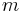 where physical density

- Y Intercept: where physical density
- Note: density-weighted calculations are only applied to centroid determination at present
- Partial volume compensation: Use model that assumes Gaussian blur of imaging modality and linear transform between pixel value and sample 'density' to correct for blurred and pixelated images (e.g. small bone in clinical CT)
- Background: pixel value that corresponds to zero bone density (could be the 'fat', 'air' or 'muscle' pixel value)
- Foreground: pixel value that corresponds to 100% bone density
- A rectangular ROI (optional): if there's a ROI, calculations are limited to its area.
Results
- Images (optional): displays the result images selected in the parameters
- Bone code: Unique numeric identifier for the anatomic name of each bone. Further bone codes can be added to BoneJ on request
- Slice: slice number indicating which slice contributed image data for this row of the results
- CSA: cross-sectional area
- X cent.: Centroid x-coordinate
- Y cent.: Centroid y-coordinate
- Density: mean physical density, calculated from pixel values and calibration coefficients
- wX cent: Density-weighted x-coordinate of centroid
- wY cent: Density-weighted y-coordinate of centroid
- Theta: angle of minor axis (axis for Imin, the long axis of your specimen's cross section) from the horizontal, ranging from
 to
to  , with positive as clockwise
, with positive as clockwise - R1: maximum chord length from minor axis
- R2: maximum chord length from major axis
- Imin: Second moment of area around major axis
- Imax: Second moment of area around minor axis
- Ipm: Product moment of area (= 0 if no errors are present, e.g. due to pixelation)
- Zmax: Section modulus around major axis (Imax / R2)
- Zmin: Section modulus around minor axis (Imin / R1)
- Zpol: Polar section modulus
- Feret Min: Minimum caliper width
- Feret Max: Maximum caliper width
- Feret Angle: Orientation of maximum caliper width
- Perimeter: Distance around external surface
- Max Thick 2D: Maximum thickness determined by local thickness in 2D
- Mean Thick 2D: Mean thickness determined by local thickness in 2D
- SD Thick 2D: Standard deviation of the mean thickness determined by local thickness in 2D
- Max Thick 3D: Maximum thickness in this slice determined by local thickness in 3D
- Mean Thick 3D: Mean thickness in this slice determined by local thickness in 3D
- SD Thick 3D: Standard deviation of the mean thickness in this slice determined by local thickness in 3D Directional measurements, using Orientation directions, and the specimen's slice centroid
- A (rad): Principal orientation (direction A)
- B (rad): Secondary orientation (direction B)
- IAa: Second moment of area around Aa axis
- IBb: Second moment of area around Bb axis
- ZAa: Section modulus around Aa axis
- ZBb: Section modulus around Bb axis
- RAa: maximum chord length from Aa axis
- RBb: maximum chord length from Bb axis
- DAa: Calliper diameter in direction of Aa
- DBb: Calliper diameter in direction of Bb
Surface area
Menu path Plugins > BoneJ > Surface area
Surface area creates a mesh from the bone in the image, and then calculates the area of the surface of the mesh. A mesh is a collection of triangular faces that defines the shape of an object in 3D graphics. The plug-in assumes that all foreground voxels represent bone.
Suitable images
A 3D binary image.
Parameters
- Export STL file(s): if checked, then the meshes created from the image are saved as .stl-files. A dialog opens for you to select a folder for the files.
Results
- Surface area: the surface area of the bone mesh
- STL-file: the mesh created from the bone image
The surface area is reported and an .stl-file saved separately for each 3D subspace in the image.
Differences to BoneJ1
- Supports hyperstacks.
- Results differ, because the marching cubes and mesh volume implementations are different.
- In BoneJ1 this plug-in was called Isosurface
Surface fraction
Menu path Plugins > BoneJ > Fraction > Surface fraction
Surface fraction calculates the fraction of bone volume in an image by comparing meshes created from bone particles and the whole image. A mesh is a collection of triangular faces that defines the shape of an object in 3D graphics. The plug-in assumes that all foreground voxels represent bone.
More formally defined, Surface fraction calculates the fraction BV/TV, which is the volume of mineralised bone BV per unit volume of the sample TV.
Suitable images
The input image must be 3D and binary.
Results
- Bone volume: volume of the mesh created from bone voxels.
- Total volume: volume of the mesh created from the whole image.
- Volume ratio: ratio of bone to total volume.
The measures are reported separately for each 3D subspace in the image, i.e. for each channel and time frame.
Differences to BoneJ1
- Supports hyperstacks.
- Results differ, because the marching cubes and mesh volume implementations are different.
- In BoneJ1 this plug-in was called Volume fraction
Results table
The BoneJ plug-ins print their results into a shared result table. This is because we often need to calculate several measures for the same image, so it's handy to have them on one row. Repeated measures for the same image are reported on different rows. The results persist even if the table is closed. To clear the table run Plugins > BoneJ > Table > Clear BoneJ results.
Note that some of the plug-ins (marked with WIP) still use a ImageJ1 style results table that works slightly differently. As they are modernized they'll move to use the same new table as the others.
Usage reporting
Menu path Edit > Options > BoneJ Usage (Modern | Legacy)
What is collected?
BoneJ uses Google Analytics to report when a plugin's run() method completes successfully.
https://www.google-analytics.com/__utm.gif?utmwv=5.2.5&utms=0&utmn=1074354874&utmhn=bonej.org&utmt=event&utme=5(Plugin%20Usage*org.bonej.wrapperPlugins.wrapperUtils.UsageReporterOptions*0.5.1)&utmcs=UTF-8&utmsr=3840x1080&utmvp=3840x1080&utmsc=24-bit&utmul=en-gb&utmje=0&utmcn=1&utmdt=bonej.org%20Usage%20Statistics&utmhid=512699200&utmr=-&utmp=%2Fstats&utmac=UA-366405-8&utmcc=__utma%3D1589599318.1327557233.1538550102.1538550102.1538550102.2%3B%2B__utmz%3D1589599318.1538550102.79.42.utmcsr%3Dgoogle%7Cutmccn%3D(organic)%7Cutmcmd%3Dorganic%7Cutmctr%3DBoneJ%20Usage%20Reporter%3B
A one-pixel GIF image is requested from Google, with a rather long set of parameters. Reported details are:
- A unique ID which is stored in your ImageJ preferences between sessions
- Your screen resolution
- The name of the plugin's Java class
- The version of BoneJ
- The first time, last time and current time you ran a BoneJ plugin
- Your system language and character map
- Google also records your IP address as all webservers do in their logs
- Some of these values are saved in your preferences
- Your operating system and Java version are reported in the user agent ID
What does the report look like?
Data are collated with the Analytics report already used to track hits on bonej.org.
For what is the data used?
So far, BoneJ has been supported mainly by grants to scientists. We wish to create quantitative reports that detail how much BoneJ is being used in the community, so that decisions to fund further development can be made rationally.
In addition, development resources are limited so it is useful to see which features are used heavily and can be consolidated, while little-used features can be abandoned or made more useful.
That is noble but my work is top secret
If you are uncomfortable with this level of data collection then please opt out, at the dialog which is prompted on first run, or by running Edit > Options > BoneJ Usage (Modern | Legacy) . Hitting Cancel (Legacy) or unchecking the box (Modern) will prevent any report from being gathered or sent and will also clear any values that were previously saved.
You can opt back in by running Edit > Options > BoneJ Usage (Modern | Legacy), checking the box (Modern only) and hitting OK.
Can I see the report?
At the moment the report is kept private. If there is a strong will from the user community, who created the data in the first place, the report could be made more open. Please feel free to discuss on the user forum.
How is it implemented?
You can read the code on Github and in every copy of BoneJ. If you turn on ImageJ's debug mode (in Edit > Options > Misc. for Legacy and Edit > Options > ImageJ2... > Scijava log level DEBUG for Modern) the URL and the GIF response will be logged to ImageJ's log window.
Where is my favourite plug-in?
We have removed some plug-ins from BoneJ. Neck shaft angle, Plateness and Structure model index have been discontinued. Interpolate ROIs, Dilate 3D and Erode 3D come pre-packaged with ImageJ, so they are no longer included in BoneJ2.
Support for Kontron IMG, Scanco ISQ and Stratec pQCT file formats has been moved to SCIFIO. Just run Edit > Options > ImageJ2, and check Use SCIFIO when opening files. When the option is enabled, these kinds of files can be opened from File > Open or dragging & dropping them like any other format.
Distribution analysis and other pQCT related tools can now be downloaded independently from the PQCT update site.
Licence
BoneJ2 is free, open-source software. You can redistribute it and/or modify it under the terms of the BSD 2-clause licence. The software is provided "as is" and any warranties are disclaimed. In no event shall the copyright holder or contributors be liable.
Citation
If you'd like to cite the software, we will soon publish a paper about migrating BoneJ from ImageJ1 to ImageJ2. You can read the draft (and send us your feedback) as we're writing it for Wellcome Open Research on Overleaf. We recommend you cite the specific release used in your research.
Funding
The redesign and porting effort to create BoneJ2 was supported by a Wellcome Trust Biomedical Resource and Technology Development Grant. Interaction with SciView was assisted by a Royal Society International Exchange grant. Ellipsoid Factor validation and improvements were funded by the UK BBSRC.